Refactoring 11. 일반화 처리
일반화는 주로 상속 계층구조나 상속 계층의 위나 아래로, 즉 상위클래스나 하위클래스로 메서드를 옮기는 기법이다.
필드상향 pull up field
메서드 상향 pull up method
생성자 내용 상향 pull up constructor body
메서드 하향 push down method
필드 하향 push down field
하위클래스 추출 extract subclass
상위클래스 추출 extract superclass
인터페이스 추출 extract interface
계층병합 collapse hierarchy
템플릿 메서드 형성 form template method
상속을 위임으로 전환 replace inheritance with delegation
위임을 상속으로 전환 replace delegation with inheritance
https://sourcemaking.com/refactoring/dealing-with-generalization
필드상향 pull up field
두 하위 클래스에 같은 필드가 들어있을떈, 필드를 상위클래스로 옮기자.
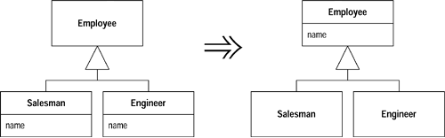
- 동기
- 여러 하위클래스에 특정한 몇개의 필드가 중복될 수 있다
- 중복된 필드의 이름이 비슷할 때도 있다.
- 중복된 필드가 서로 비슷한 방식으로 사용된다면 일반화한다.
- 방법
- 상위 클래스로 옮길 필드가 사용된 모든 부분을 검사해서 같은 방식으로 사용되는지 확인한다
- 필드들의 이름이 같지 않다면 필드명을 상위클래스 필드로 사용할 이름으로 변경하자
- 상위클래스 안에 새 필드를 작성하자 –> 필드가 private이면 상위클래스를 protected로 수정해서 상위클래스가 참조할 수 있게 하자.
- 하위클래스의 필드는 삭제하자
메서드 상향 pull up method
기능이 같은 메서드가 여러 하위클래스에 들어 있을 땐 그 메서드를 상위클래스로 옮기자.
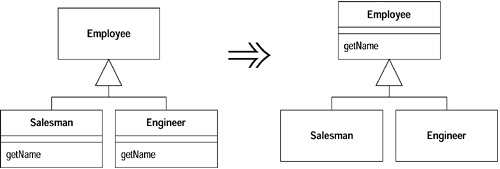
- 동기
- 메서드의 내용이 마치 복사해서 붙여넣은 것처럼 서로 같을 때다.
- 하위클래스 메서드가 상위클래스 메서드를 재정의함에도 불구하고 기능이 같을때다
- 두 메서드가 똑같진 않고 비슷한 부분이 있다면 템플릿 메서드 형성을 실시하는 방법도 있다.
- 방법
- 메서드가 서로 같은지 검사
- 메서드의 시그너처가 서로 다르다면 모든 시그너처를 상위클래스에 사용하고자 하는 시그너처로 수정하자
- 상위클래스 안에 새 메서드를 작성하고 새 메서드 안에 같은 메서드의 내용을 복사한 후 적절히 수정하고 컴파일하자 –> 철처한 타입선을 요하는 언어로 작업 중일 때 그 메서드가 두 하위클래스엔 있고 상위클래스엔 없는 다른 메서드를 호출한다면 상위클래스에 abstract타입의 메서드를 선언하자
- 하위클래스의 메서드를 하나 삭제하자
- 예제
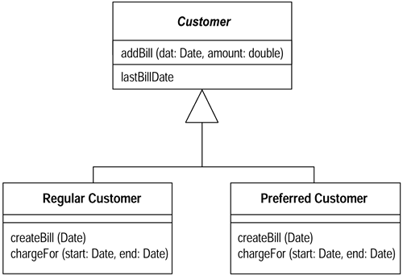
void createBill (date Date) {
double chargeAmount = chargeFor (lastBillDate, date);
addBill (date, charge);
}
chargeFor메서드가 하위클래스마다 다르기 때문에 상위클래스로 createBill을 올릴 수 없다.
우선 상위클래스에서 chargeFor메서드를 abstract로 선언해야한다.
class Customer...
abstract double chargeFor(date start, date end)
createBill클래스를 상위클래스로 올리고, 하위에선 삭제한 후 구조
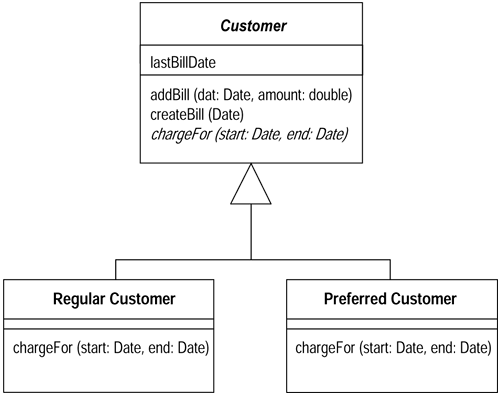
생성자 내용 상향 pull up constructor body
하위 클래스마다 거의 비슷한 내용의 생성자가 있을 땐, 상위클래스에 생성자를 작성하고, 그 생성자를 하위클래스의 메서드에서 호출하자.
class Manager extends Employee...
public Manager (String name, String id, int grade) {
_name = name;
_id = id;
_grade = grade;
}
public Manager (String name, String id, int grade) {
super (name, id);
_grade = grade;
}
- 동기
- 하위클래스는 대체로 공통적인 기능이 생성기능이다.
- 그래서 하위클래스에서 생성자 메서드를 작성하고 상위 클래스로 올려서 하위클래스들이 호출하게 해야한다.
- 대부분 공통적인 기능은 생성자 내용 전체다.
- 방법
- 상위클래스에 생성자를 정의하자
- 하위클래스 생성자에서 앞 부분의 공통적인 코드를 상위클래스 생성자 안으로 옮기자
- 하위 클래스 생성자 안의 맨앞에 상위클래스 생성자 호출코드를 넣자
- 예제
class Employee... protected String _name; protected String _id; class Manager extends Employee... public Manager (String name, String id, int grade) { _name = name; _id = id; _grade = grade; } private int _grade;
Employee클래스의 두 필드는 Employee클래스의 생성자 안에서 값 지정이 이뤄져야 한다. 따라서 다음과 같이 생성자 메서드를 정의하고 하위클래스가 호출해야함을 명시하고자 protected 타입으로 선언하자.
class Employee
protected Employee (String name, String id) {
_name = name;
_id = id;
}
super로 생성자 메서드를 하위클래스에서 호출하게 하자
public Manager (String name, String id, int grade) {
super (name, id);
_grade = grade;
}
나중에 공통적인 코드가 발견될 땐 조금 달라진다.
class Employee...
boolean isPriviliged() {..}
void assignCar() {..}
class Manager...
public Manager (String name, String id, int grade) {
super (name, id);
_grade = grade;
if (isPriviliged()) assignCar(); // 모든 하위클래스의 공통기능
}
boolean isPriviliged() {
return _grade > 4;
}
assignCar메서드는 상위클래스의 생성자안으로 옮길 수 없다. 왜냐하면 grade가 _grade필드에 대입된 후 실행되야하기 때문이다. 따라서 메서드 추출과 메서드 상향을 적용해야한다.
class Employee...
void initialize() {
if (isPriviliged()) assignCar();
}
class Manager...
public Manager (String name, String id, int grade) {
super (name, id);
_grade = grade;
initialize();
}
메서드 하향 push down method
상위클래스에 있는 기능을 일부 하위클래스만 사용할 땐, 그 기능을 관련된 하위 클래스 안으로 옮기자.
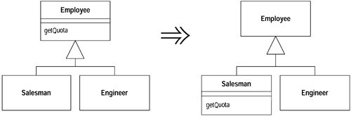
- 방법
- 모든 하위클래스에 메서드를 하나 선언하고, 그 메서드의 내용을 각 하위클래스로 복사하자 –> 메서드가 필드에 접근할 수 있으려면 필드를 protected로 선언해야한다.
- 상위클래스의 메서드를 삭제한다.
필드 하향 push down field
일부 하위클래스만 사용하는 필드가 있을 땐, 그 필드를 사용하는 하위클래스로 옮기자.
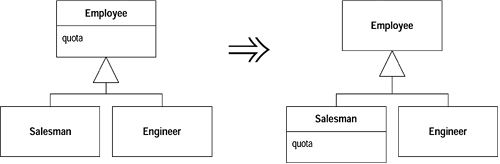
- 동기
- 필드가 상위클래스엔 필요없고 하위클래스에만 필요할 때 사용
하위클래스 추출 extract subclass
일부 인스턴스에만 사용되는 기능이 든 클래스가 있을 땐, 그 기능 부분을 전담하는 하위클래스를 작성하자.
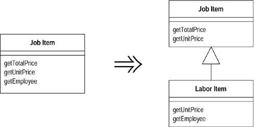
- 동기
- 주로 클래스의 기능을 그 클래스의 일부 인스턴스만 사용할 때 적용한다.
- 하위클래스 추출 대신 클래스 추출기능을 사용 할 수 있다. (위임이냐 상속이냐 차이) 하위클래스 추출을 사용할 경우, 객체가 생성된 후에는 객체의 클래스 기반기능을 수정할 수 없다는 단점과 하위클래스를 사용해서 한가지 변형만을 표현할 수도 있다는 단점이 있다.
- 방법
- 원본클래스에 새 하위클래스를 정의하자
- 그 하위클래스에 생성자 메서드를 작성하자–>super를 사용해서 상위클래스의 생성자를 호출하자
- 상위클래스의 생성자를 호출하는 부분을 전부찾아서, 그 부분이 하위클래스를 사용한다면 새로 작성한 생성지 호출을 고친다
- 메서드 하향과 필드 하향을 차례로 적용해서 기능을 하위클래스로 옮긴다
- 계층구조가 현재 나타내는 정보가 저장되는 필드가 있는지 찾아서 캡슐화를 실시해 그 필드를 제거하고 속성 읽기 메서드를 다형적인 상수 메서드로 교체한다. 이 필드를 사용하는 모든 부분을 대상으로 조건문을 재정의로 전환을 실시해야한다.
- 예제
class JobItem ... public JobItem (int unitPrice, int quantity, boolean isLabor, Employee employee) { _unitPrice = unitPrice; _quantity = quantity; _isLabor = isLabor; _employee = employee; } public int getTotalPrice() { return getUnitPrice() * _quantity; } public int getUnitPrice(){ return (_isLabor) ? _employee.getRate(): _unitPrice; } public int getQuantity(){ return _quantity; } public Employee getEmployee() { return _employee; } private int _unitPrice; private int _quantity; private Employee _employee; private boolean _isLabor; class Employee... public Employee (int rate) { _rate = rate; } public int getRate() { return _rate; } private int _rate;
LaborItem 하위클래스를 추출한다. 기능과 데이터 중 일부가 LaborItem클래스에만 사용되기 때문이다.
class LaborItem extends JobItem {}
JobItem 생성자의 시그너처를 복사해서 LaborItem클레스에 생성자를 작성한다.
public LaborItem (int unitPrice, int quantity, boolean isLabor, Employee employee) {
super (unitPrice, quantity, isLabor, employee);
}
기존 JobItem생성자를 호출하는 부분을 찾아서 LaborItem생성자가 대신하게 변경한다.
JobItem j1 = new JobItem (0, 5, true, kent);
JobItem j1 = new LaborItem (0, 5, true, kent);
새 생성자를 작성하고 기존의 생성자는 protected타입으로 바꾸자. 아직 하위클래스가 기존 생성자를 생성하기 때문
class JobItem...
protected JobItem (int unitPrice, int quantity, boolean isLabor, Employee employee) {
_unitPrice = unitPrice;
_quantity = quantity;
_isLabor = isLabor;
_employee = employee;
}
public JobItem (int unitPrice, int quantity) {
this (unitPrice, quantity, false, null)
}
하위 클래스에도 아래와 같이 변경한다.
class LaborItem
public LaborItem (int quantity, Employee employee) {
super (0, quantity, true, employee);
}
그러면 JobItem의 기능들을 하위클래스로 내릴 수 있다. 우선 읽기 메서드 getEmployee에 메서드 하향을 적용한 모습이다. employee필드는 나중에 하위클래스로 내릴 예정이므로, 일단 protected타입으로 선언한다.
class LaborItem...
public Employee getEmployee() {
return _employee;
}
class JobItem...
protected Employee _employee;
employee필드가 내려간 하위클래스에서만 값이 설정되게 생성자를 모두 정리하자.
class JobItem...
protected JobItem (int unitPrice, int quantity, boolean isLabor) {
_unitPrice = unitPrice;
_quantity = quantity;
_isLabor = isLabor;
}
class LaborItem ...
public LaborItem (int quantity, Employee employee) {
super (0, quantity, true);
_employee = employee;
}
_isLabor필드는 상위클래스에서 상속되는 정보를 참조하는 데 쓰인다. 따라서 이 필드는 삭제하고 필드자체 캡슐화를 실시한 후 재정의 상수메서드를 이용하게끔 접근 메서드를 수정하는 것이다. 재정의 상수메서드는 각 구현부가 서로 다른 고정값을 반환하는 메서드이다.
class JobItem...
protected boolean isLabor() {
return false;
}
class LaborItem...
protected boolean isLabor() {
return true;
}
isLabor필드를 없애고, isLabor메서드를 호출하는 부분들에 조건문을 재정의로 전환을 적용해야한다.
class JobItem...
public int getUnitPrice(){
return (isLabor()) ?
_employee.getRate():
_unitPrice;
}
그러면 다음과 같이 수정된다.
class JobItem… public int getUnitPrice(){ return _unitPrice; } class LaborItem… public int getUnitPrice(){ return _employee.getRate(); }
일부데이터를 사용하는 메서드들을 하위클래스로 내린 후 데이터에 필드하향을 적용하자. 어떤 메서드가 그 데이터를 사용해서 개발자가 그 메서드를 사용할 수 없다면, 추가로 메서드 하향이나 조건문을 재정의로 전환을 실시해야한다. unitPrice필드는 근로와 관련없는 항목들(JobItem부분)에만 사용되므로, JobItem을 대상으로 하위클래스 추출을 다시 실시해서 PartsItem클래스를 만들면 된다. 작업을 완료하면 JobItem클래스는 abstract타입이 된다.
상위클래스 추출 extract superclass
기능이 비슷한 두 클래스가 있을 땐, 상위클래스를 작성하고 공통된 기능들을 그 상위클래스로 옮기자.
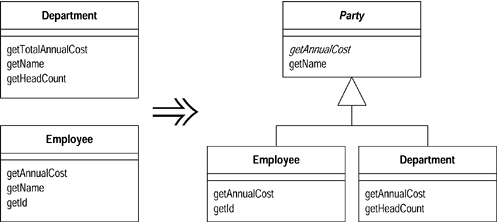
- 동기
- 중복된 코드의 한 형태는 비슷한 작업을 같은 방식이나 다른 방식으로 수행하는 두 클래스다.
- 상위클래스를 적용할 수 없을 땐, 클래스 추출을 적용하면 된다. 상속이냐 위임이냐의 차이로, 두 클래스가 기능뿐만 아니라 인터페이스도 같다면 상속이 더 간단하다.
- 방법
- 빈 abstract타입의 상위클래스를 작성한다. 원본클래스들은 이 상위 클래스의 하위클래스로 만든다.
- 필드상향, 메서드 상향, 생성자 내용 상향을 차례로 적용해서 공통된 요소를 상위클래스로 옮기자.
- 예제
class Employee... public Employee (String name, String id, int annualCost) { _name = name; _id = id; _annualCost = annualCost; } public int getAnnualCost() { return _annualCost; } public String getId(){ return _id; } public String getName() { return _name; } private String _name; private int _annualCost; private String _id; public class Department... public Department (String name) { _name = name; } public int getTotalAnnualCost(){ Enumeration e = getStaff(); int result = 0; while (e.hasMoreElements()) { Employee each = (Employee) e.nextElement(); result += each.getAnnualCost(); } return result; } public int getHeadCount() { return _staff.size(); } public Enumeration getStaff() { return _staff.elements(); } public void addStaff(Employee arg) { _staff.addElement(arg); } public String getName() { return _name; } private String _name; private Vector _staff = new Vector();
앞의 Employee클래스와 Department클래스의 공통점은
- 사원과 부서는 둘다 이름이 있다
- 계산 메서드가 약간 다르긴 하지만 두 클래스 모두 연간 경비가 있다.
그래서 아래처럼 상위클래스를 새로 작성하고 기존 상위클래스는 새 상위클래스 안에 하위클래스로 넣는다.
abstract class Party {}
class Employee extends Party...
class Department extends Party...
필드 상향부터 적용을 시킨다.
class Party...
protected String _name;
그담으로 읽기 메서드에 메서드 상향을 적용한다.
class Party {
public String getName() {
return _name;
}
name필드를 private타입으로 만들어야 한다. 이를 위해 생성자 내용 상향을 적용하여 이름을 할당하자.
class Party...
protected Party (String name) {
_name = name;
}
private String _name;
class Employee...
public Employee (String name, String id, int annualCost) {
super (name);
_id = id;
_annualCost = annualCost;
}
class Department...
public Department (String name) {
super (name);
}
Department.getTotalAnnualCost메서드와 Employee.getAnnualCost메서드는 기능(목적)이 같으므로 이름이 같아야 한다.
class Department extends Party {
public int getAnnualCost(){
Enumeration e = getStaff();
int result = 0;
while (e.hasMoreElements()) {
Employee each = (Employee) e.nextElement();
result += each.getAnnualCost();
}
return result;
}
두 메서드의 내용은 아직 다르므로 메서드 상향을 할 수 없다. 그래서 상위클래스에 abstract를 선언한다.
abstract public int getAnnualCost()
이제 Party클래스로 옮긴 getAnnualCost메서드만 사용한다.
인터페이스 추출 extract interface
클래스 인터페이스의 같은 부분을 여러 클라이언트가 사용하거나, 두 클래스에 인터페이스의 일부분이 공통으로 들어있을 땐, 공통부분을 인터페이스로 빼내자.
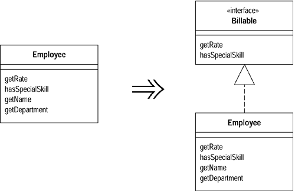
- 동기
- 여러 클라이언트가 클래스 기능 중 일부분만 사용하는 경우와 특정기능의 여러 클래스를 함께 사용하는 경우엔, 클래스 기능 중 사용되는 부분을 분리해서 시스템을 사용할 때 사용되는 부분을 확실히 알 수 있게 하는 것이 좋다.
- 상위클래스 추출과 인터페이스 추출은 비슷한 부분이 있다. 인터페이스 추출은 공통된 코드를 빼내는 것이아니라 공통된 인터페이스만 빼내는 기법이다.
- 클래스가 서로 다른 상황에서 서로 다른 역할을 담당할 때 인터페이스를 사용하면 좋다. 각 역할 마다 인터페이스 추출을 적용하자. 즉 그 클래스가 서버에서 하는 작업을 기술해야 할 때도 인터페이스를 사용하면 좋다. 나중에 다른 종류의 서버를 허용해야 할 땐 단지 그 인터페이스를 상속구현하기만 하면 된다.
- 방법
- 빈 인터페이스를 작성하자
- 공통 기능을 인터페이스 안에 선언하자
- 그 인터페이스를 상속구현하는 관련 클래스들을 선언하자
- 그 인터페이스를 사용하게 클라이언트의 타입 선언 코드를 수정하자
- 예제 TimeSheet클래스는 사원비를 산출한다. 이를 위해 사원평점과 특수 기술보유여부를 알아야 한다는 전제다.
double charge(Employee emp, int days) { int base = emp.getRate() * days; if (emp.hasSpecialSkill()) return base * 1.05; else return base; }
Employee클래스에는 평점, 특수 기술보유여부 외에도 많은 정보가 있지만, 필요한 정보는 두개 뿐이므로, 두 정보를 알아내는 인터페이스를 아래와 같이 정의한다.
interface Billable {
public int getRate();
public boolean hasSpecialSkill();
}
그 인터페이스를 상속구현하는 Employee클래스를 선언한다.
class Employee implements Billable ...
charge메서드 선언 코드를 아래와 같이 수정한다.
double charge(Billable emp, int days) {
int base = emp.getRate() * days;
if (emp.hasSpecialSkill())
return base * 1.05;
else return base;
}
계층병합 collapse hierarchy
상위클래스와 하위클래스가 거의 다르지 않을 땐, 둘을 합치자.
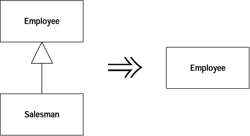
- 동기
- 상속을 과용한 나머지 클래스 관계가 복잡해져서, 하위 클래스가 쓸모 없게되면 하나의 클래스로 합쳐야 한다.
- 방법
- 상위 클래스와 하위 클래스 중 무엇을 삭제할 지 선택한다
- 필드 상향과 메서드 상향을 적용하거나 메서드 하향과 필드 하향을 적용해서 삭제할 클래스의 기능을 합칠 클래스로 전부 옮긴다.
템플릿 메서드 형성 form template method
하위 클래스 안의 두 메서드가 거의 비슷한 단계들을 같은 순서로 수행할 땐, 그 단계들을 시그너처가 같은 두 개의 메서드로 만들어서 두 원본 메서드를 같게 만든 후, 두 메서드를 상위 클래스로 옮기자.
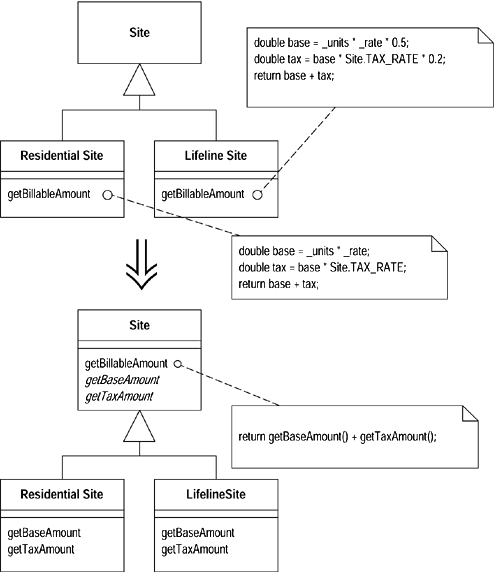
- 동기
- 하위 클래스에 들어있는 두 메서드가 완전히 똑같지 않은 경우, 거의 비슷한 단계를 같은 순서로 수행하는 경우
- 그럴 땐 그 순서를 상위 클래스로 옮기고 재정의를 통해 각 단계가 고유의 작업을 다른 방식으로 수행하게 하면 된다. 이런 메서드를 템플릿 메서드라고 한다.
- 방법
- 추출된 메서드 전부를 똑같거나 전혀 다르게 분해하자
- 메서드 상향을 실시해서 서로 같은 메서드를 상위클래스로 옮기자
- 서로 다른 메서드를 대상으로 메서드명 변경을 실시해서 각 단계에서의 모든 메서드의 시그너처를 같게 만들자
- 원본 메서드 중 하나에 메서드 상향을 실시하자. 다른 메서드의 시그너처를 상위클래스에 abstract타입의 메서드로 정의하자
- 예제 Customer클래스엔 내역을 출력하는 두 메서드가 있다. statement메서드는 고객의 대여료 내역을 아스키 인코딩으로 출력한다.
public String statement() {
Enumeration rentals = _rentals.elements();
String result = "Rental Record for " + getName() + "\n";
while (rentals.hasMoreElements()) {
Rental each = (Rental) rentals.nextElement();
//show figures for this rental
result += "\t" + each.getMovie().getTitle()+ "\t" +
String.valueOf(each.getCharge()) + "\n";
}
//add footer lines
result += "Amount owed is " + String.valueOf(getTotalCharge()) + "\n";
result += "You earned " + String.valueOf(getTotalFrequentRenterPoints()) +
" frequent renter points";
return result;
}
htmlStatement메서드는 고객의 대여료 내역을 html로 출력한다.
public String htmlStatement() {
Enumeration rentals = _rentals.elements();
String result = "<H1>Rentals for <EM>" + getName() + "</EM></H1><P>\n";
while (rentals.hasMoreElements()) {
Rental each = (Rental) rentals.nextElement();
//show figures for each rental
result += each.getMovie().getTitle()+ ": " +
String.valueOf(each.getCharge()) + "<BR>\n";
}
//add footer lines
result += "<P>You owe <EM>" + String.valueOf(getTotalCharge()) + "</EM><P>\n";
result += "On this rental you earned <EM>" +
String.valueOf(getTotalFrequentRenterPoints()) +
"</EM> frequent renter points<P>";
return result;
}
두 메서드가 어떤 공통 상위클래스의 하위크래스가 되게 정리가 필요하다. 이렇게 하려면 아래와 같이 메서드 객체를 이용하여 내역을 출력하는 별도의 전략패턴 게층을 작성해야한다.
Figure 11.1. 내용출력에 전략 패턴 사용 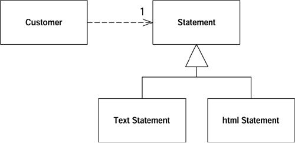
class Statement {}
class TextStatement extends Statement {}
class HtmlStatement extends Statement {}
아래처럼 메서드 이동을 적용해서 두 개의 statement메서드를 하위클래스로 옮기자.
class Customer...
public String statement() {
return new TextStatement().value(this);
}
public String htmlStatement() {
return new HtmlStatement().value(this);
}
class TextStatement {
public String value(Customer aCustomer) {
Enumeration rentals = aCustomer.getRentals();
String result = "Rental Record for " + aCustomer.getName() + "\n";
while (rentals.hasMoreElements()) {
Rental each = (Rental) rentals.nextElement();
//show figures for this rental
result += "\t" + each.getMovie().getTitle()+ "\t" +
String.valueOf(each.getCharge()) + "\n";
}
//add footer lines
result += "Amount owed is " + String.valueOf(aCustomer.getTotalCharge()) + "\n";
result += "You earned " + String.valueOf(aCustomer.getTotalFrequentRenterPoints()) +
" frequent renter points";
return result;
}
class HtmlStatement {
public String value(Customer aCustomer) {
Enumeration rentals = aCustomer.getRentals();
String result = "<H1>Rentals for <EM>" + aCustomer.getName() + "</EM></H1><P>\n";
while (rentals.hasMoreElements()) {
Rental each = (Rental) rentals.nextElement();
//show figures for each rental
result += each.getMovie().getTitle()+ ": " +
String.valueOf(each.getCharge()) + "<BR>\n";
}
//add footer lines
result += "<P>You owe <EM>" + String.valueOf(aCustomer.getTotalCharge()) +
"</EM><P>\n";
result += "On this rental you earned <EM>"
String.valueOf(aCustomer.getTotalFrequentRenterPoints()) +
"</EM> frequent renter points<P>";
return result;
}
비슷한 두 메서드를 하위클래스에 넣으면 템플릿 메서드 형성을 적용할 수 있다. 이 기법의 핵심은 메서드 추출로 두 메서드의 다른 부분을 추출해서 다른 코드를 비릇한 코드와 분리하는 것이다. 추출할 때마다 내용은 다르고 시그너처는 같은 메서드를 작성하자.
아래의 예제는 헤더 출력이다. 두 메서드 모두 Customer클래스를 이용해서 정보를 얻지만, 결과문자열은 다른 형식으로 출력된다. 이 문자열을 형식화하는 부분을 시그너처가 같은 별도의 메서드로 빼낼수 있다.
class TextStatement...
String headerString(Customer aCustomer) {
return "Rental Record for " + aCustomer.getName() + "\n";
}
public String value(Customer aCustomer) {
Enumeration rentals = aCustomer.getRentals();
String result =headerString(aCustomer);
while (rentals.hasMoreElements()) {
Rental each = (Rental) rentals.nextElement();
//show figures for this rental
result += "\t" + each.getMovie().getTitle()+ "\t" +
String.valueOf(each.getCharge()) + "\n";
}
//add footer lines
result += "Amount owed is " + String.valueOf(aCustomer.getTotalCharge()) + "\n";
result += "You earned " + String.valueOf(aCustomer.getTotalFrequentRenterPoints()) +
" frequent renter points";
return result;
}
class HtmlStatement...
String headerString(Customer aCustomer) {
return "<H1>Rentals for <EM>" + aCustomer.getName() + "</EM></H1><P>\n";
}
public String value(Customer aCustomer) {
Enumeration rentals = aCustomer.getRentals();
String result = headerString(aCustomer);
while (rentals.hasMoreElements()) {
Rental each = (Rental) rentals.nextElement();
//show figures for each rental
result += each.getMovie().getTitle()+ ": " +
String.valueOf(each.getCharge()) + "<BR>\n";
}
//add footer lines
result += "<P>You owe <EM>" + String.valueOf(aCustomer.getTotalCharge()) + "</ EM><P>\n";
result += "On this rental you earned <EM>" +
String.valueOf(aCustomer.getTotalFrequentRenterPoints()) +
"</EM> frequent renter points<P>";
return result;
}
class TextStatement …
public String value(Customer aCustomer) {
Enumeration rentals = aCustomer.getRentals();
String result = headerString(aCustomer);
while (rentals.hasMoreElements()) {
Rental each = (Rental) rentals.nextElement();
result += eachRentalString(each);
}
result += footerString(aCustomer);
return result;
}
String eachRentalString (Rental aRental) {
return "\t" + aRental.getMovie().getTitle()+ "\t" +
String.valueOf(aRental.getCharge()) + "\n";
}
String footerString (Customer aCustomer) {
return "Amount owed is " + String.valueOf(aCustomer.getTotalCharge()) + "\n" +
"You earned " + String.valueOf(aCustomer.getTotalFrequentRenterPoints()) +
" frequent renter points";
}
class HtmlStatement…
public String value(Customer aCustomer) {
Enumeration rentals = aCustomer.getRentals();
String result = headerString(aCustomer);
while (rentals.hasMoreElements()) {
Rental each = (Rental) rentals.nextElement();
result += eachRentalString(each);
}
result += footerString(aCustomer);
return result;
}
String eachRentalString (Rental aRental) {
return aRental.getMovie().getTitle()+ ": " +
String.valueOf(aRental.getCharge()) + "<BR>\n";
}
String footerString (Customer aCustomer) {
return "<P>You owe <EM>" + String.valueOf(aCustomer.getTotalCharge()) +
"</EM><P>" + "On this rental you earned <EM>" +
String.valueOf(aCustomer.getTotalFrequentRenterPoints()) +
"</EM> frequent renter points<P>";
}
두 메서드 중 하나에 메서드 상향을 적용하자. 메서드를 올릴 때, 하위클래스의 메서드를 abstract로 선언해야한다.
class Statement...
public String value(Customer aCustomer) {
Enumeration rentals = aCustomer.getRentals();
String result = headerString(aCustomer);
while (rentals.hasMoreElements()) {
Rental each = (Rental) rentals.nextElement();
result += eachRentalString(each);
}
result += footerString(aCustomer);
return result;
}
abstract String headerString(Customer aCustomer);
abstract String eachRentalString (Rental aRental);
abstract String footerString (Customer aCustomer);
TextStatement의 value메서드를 삭제하고 html statement의 value메서드도 삭제한다. Figure 11.2. Classes after forming the template method 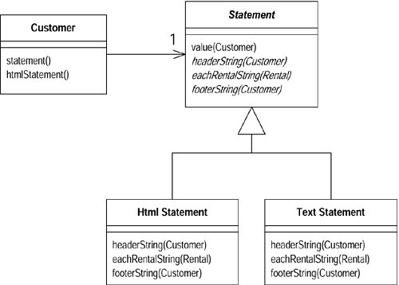
상속을 위임으로 전환 replace inheritance with delegation
하위클래스가 상위클래스 인터페이스의 일부만 사용할 때나 데이터를 상속받지 않게 해야할 땐 상위클래스에 필드를 작성하고 모든 메서드가 그 상위클래스에 위임하게 수정한 후 하위클래스를 없애자.
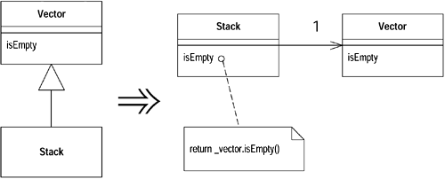
- 동기
- 클래스의 기능이 인터페이스에 제대로 반영되지 않았거나, 하위클래스로 적절하지 않은 많은 데이터를 상속하게 작성했거나, 상위클래스의 protected메서드가 하위클래스에 사용되지 않기 때문 등등 상속에 적합하지 않을 때
- 방법
- 하위클래스 안에 상위클래스의 인스턴스를 참조하는 필드를 작성하자. 그 필드를 this로 초기화하자
- 하위클래스 안의 각 메서드를 수정해서 대리 필드를 사용하게 하자.
- 하위클래스 선언을 삭제하고 대리 객체 대입부분을 새 객체대입으로 바꾸자
- 클라이언트가 사용하는 상위클래스 메서드마다 간단한 위임메서드를 추가하자
- 예제 부적절한 상속의 전형적인 예는 스택을 백터의 하위클래스로 만드는 것이다.
예제는 클라이언트가 스택으로 네 개의 메서드 push, pop, size, isEmpty만 호출한다는 가정이다. 그 중 size와 isEmpty메서드는 Vector클래스에서 상속된다.
class MyStack extends Vector {
public void push(Object element) {
insertElementAt(element,0);
}
public Object pop() {
Object result = firstElement();
removeElementAt(0);
return result;
}
}
위임하게 만드려면 우선 작업을 위임박을 Vector클래스에 필드를 작성한다. 이 필드를 this에 연결하면 이 리팩토링을 실시하는 동안 위임과 상속을 혼용할 수 있다.
private Vector _vector = this;
이제 push와 pop에서 각 메서드를 위임을 사용하게 수정한다.
public void push(Object element) {
_vector.insertElementAt(element,0);
}
public Object pop() {
Object result = _vector.firstElement();
_vector.removeElementAt(0);
return result;
}
하위 클래스의 메서드를 모두 작업했으면 상위클래스로의 연결을 끊어야 한다.
class MyStack extends Vector
private Vector _vector = new Vector();
클라이언트가 사용하는 상위클래스 메서드에 기능을 위임하는 간단한 위임 메서드를 추가하자.
public int size() {
return _vector.size();
}
public boolean isEmpty() {
return _vector.isEmpty();
}
위임을 상속으로 전환 replace delegation with inheritance
위임을 이용 중인데 인터페이스 전반에 간단한 위임으로 도배하게 될 땐, 위임 클래스를 대리 객체의 하위클래스로 만들자.
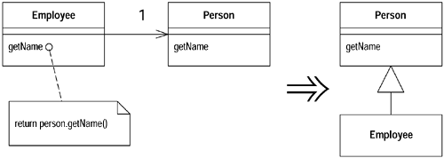
- 동기
- 대리객체의 모든 매서드를 사용하게 되고, 그런 간단한 위임메서드를 지나치게 자주 작성하게 될 때
- 위임하려는 클래스의 모든 메서드를 사용하는 게 아닐 경우에는 위임을 상속으로 전환해서는 안된다. 왜냐하면 하위클래스는 반드시 상위클래스의 인터페이스를 따라야 하기 때문이다.
- 대리 객체를 둘 이상의 객체가 사용하고 변경가능할 때, 데이터를 더 이상 공유할 일이 없어서 위임을 상속으로 바꿀 수 없다. 데이터 공유는 상속으로 되돌릴 수 없는 작업이다. 반면, 객체가 변경 불가일 땐 바로 복사할 수도 있고 다른 부분에선 모르기 때문에 데이터 공유가 문제되지 않는다.
- 방법
- 위임클래스를 대리객체의 하위클래스로 만들자
- 대리필드에 대리객체 자체를 할당하자
- 단순 위임메서드를 모두 삭제
- 다른 위임 부분을 전부 대리 객체 자체를 호출하는 코드로 바꾼다
- 대리 필드를 삭제한다.
예제 Employee클래스는 Person객체에 위임한다. ``` class Employee { Person _person = new Person();
public String getName() { return _person.getName(); } public void setName(String arg) { _person.setName(arg); } public String toString () { return “Emp: “ + _person.getLastName(); } }
class Person { String _name;
public String getName() { return _name; } public void setName(String arg) { _name = arg; } public String getLastName() { return _name.substring(_name.lastIndexOf(‘ ‘)+1); } }
다음과 같이 하위클래스를 선언한다.
class Employee extends Person
다음으로 대리 필드에 대리 객체 자체를 할당하자. getName과 setName과 같은 단순위임 메서드를 전부 삭제해야한다. 예제에서는 Employee클래스에 있는 getName과 setName메서드를 삭제하면 된다.
그리고 직접 toString을 호출하게 고친다.
public String toString () { return “Emp: “ + getLastName(); } ``` 위임메서드를 사용하는 모든 메서드를 삭제했으면 _person필드를 삭제한다.